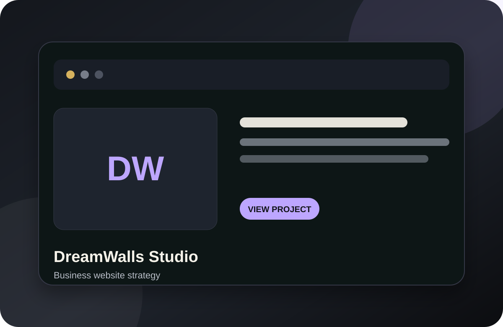
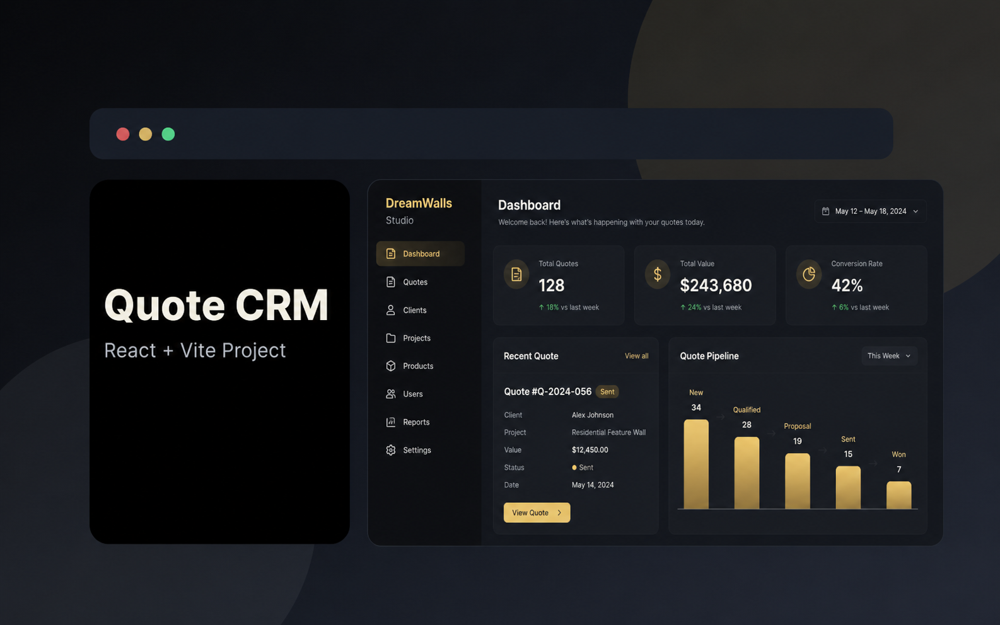
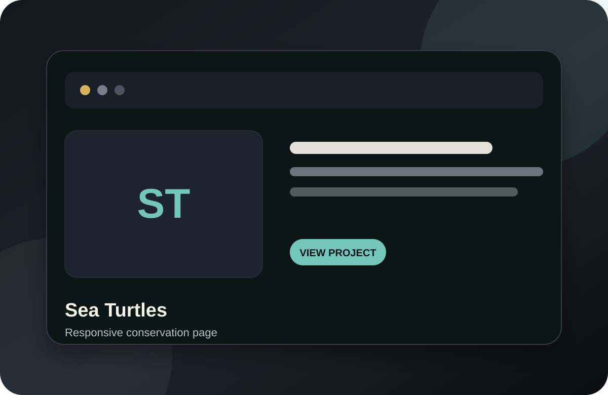

01 / Front-End Engineering
Open to remote web development opportunities
Viktoriia Prisna
Junior Full-Stack Web Developer
Web developer with 2+ years of hands-on experience across business, academic and portfolio projects. I build, maintain and improve responsive websites and web applications with a strong focus on front-end development, web maintenance, SEO, e-commerce and reliable digital workflows.
01
About
Technical execution backed by real business leadership.
I combine hands-on web development with a long background in operations, finance and team leadership. I understand not only how a website should work, but why the business needs it to work.
I am completing an Associate Degree in Web Development at San Diego Mesa College / San Diego Community College District and continuing my studies in Information Technology.
My technical work includes React, Next.js, JavaScript, PHP/MySQL, responsive UI, relational databases, OpenCart, deployment, SEO, website maintenance and WordPress.
Before moving deeper into technology, I built extensive experience in executive management and financial operations, including General Manager and Financial Director responsibilities, large-team leadership, process design, budgeting, internal controls and crisis management.
02
Technical profile
A broad practical stack for development, maintenance and digital operations.
02 / React Ecosystem
React · Next.js · Vite · Bootstrap 5
Component-based interfaces, reusable layouts, state-driven UI, routing concepts, responsive application structure, build tooling and deployment workflows.03 / Back-End & Data
PHP · MySQL · Relational Databases · CRUD
Server-side fundamentals, forms, database relationships, queries, CRUD-style workflows, data handling, hosting environments and practical full-stack integration.04 / APIs & Integrations
REST · JSON · PayPal Sandbox · IPN
API-based workflows, client-server data exchange, payment-flow testing, third-party integrations, form processing and integration-focused troubleshooting.05 / E-commerce & CMS
OpenCart · WooCommerce Foundations · WordPress
Store setup, product/catalog structure, content workflows, forms, custom styling, payment configuration/testing, ongoing CMS maintenance and e-commerce support.06 / SEO & Web Quality
Technical SEO · Schema.org · Performance · Accessibility
On-page and technical SEO basics, metadata, structured data, image optimization, performance improvement, Core Web Vitals concepts, accessible content and cross-browser quality checks.07 / Git, Hosting & Delivery
Git · GitHub · GitHub Pages · Vercel · VS Code
Version control, repository workflows, deployment, hosting, InfinityFree, domains/DNS basics, release-oriented troubleshooting and maintaining live websites.08 / AI-Assisted Development
Prompt Engineering · AI Debugging · Workflow Automation
Use of AI-assisted development for debugging, code refinement, research, documentation, content workflows, problem decomposition and faster iteration.09 / Leadership & Operations
Team Leadership · Budgeting · KPI · Financial Control
Large-team management, hiring and training, staff accountability, budgeting, financial reporting, process design, operational control, cross-functional coordination and crisis management.10 / Expanding Stack
Node.js · Python · Docker · CI/CD · GraphQL · Cloudflare
Technologies I am actively expanding toward as I grow from junior web development into broader full-stack and production-oriented engineering.03
Selected work
Projects that show how I build, maintain and ship.

01Live business project
Dream Walls Studio
A customer-facing service website I develop and maintain for a real business, including responsive pages, service and contact content, lead pathways, structured data, SEO, performance-minded updates and ongoing website maintenance.
Visit live site ↗
02React / Vite
Dream Walls Quote CRM
A CRM-style interface for customer and quote management using reusable React components, responsive data views, search/filter interactions and CRUD-style concepts.
Open project ↗
03Academic project
OpenCart E-commerce
Installed and configured OpenCart in a PHP/MySQL hosting environment, worked with catalog setup and tested payment flows using PayPal Sandbox and IPN concepts.
04CMS / WordPress
Alla's Bakery
A multi-page CMS project with custom CSS, posts and categories, Contact Form 7, gallery, embedded map and content-focused page structure built in WordPress.

05Responsive UI
Sea Turtles Responsive Page
Responsive front-end coursework focused on CSS Grid, Flexbox, media queries and content that adapts cleanly across desktop and mobile layouts.
Open project ↗04
Experience & education
Web development supported by executive-level business experience.
2024 — Present
Project-based / business experience
Web Developer & Digital Operations — Dream Walls Studio
Develop and maintain the company website and digital customer workflows. Translate business requirements into responsive pages, lead paths, SEO improvements, structured content, quote processes, front-end updates and ongoing website maintenance.
2024 — 2026
Education
Associate Degree in Web Development — San Diego Mesa College / SDCCD
Degree completion in 2026. Relevant work includes front-end development, JavaScript, PHP, relational databases, e-commerce/CMS, cybersecurity and digital ethics, networking fundamentals, Git/GitHub and practical deployment. Continuing studies in Information Technology.
2013 — 2024
Prior executive experience
General Manager / Financial Director — International Hospitality & Operations
More than a decade of senior operational and financial leadership. Managed large, multi-department teams; led hiring, training and performance systems; handled budgets, financial control, reporting, process design, internal controls, crisis management, cross-functional coordination and digital transformation initiatives.
Let’s connect
Building reliable web experiences with a business mindset.
I am open to junior web development, front-end, website maintenance, SEO/web support and project-based opportunities with remote teams in Ukraine and internationally.
vika.cn.92@gmail.com
San Diego, CA · Remote